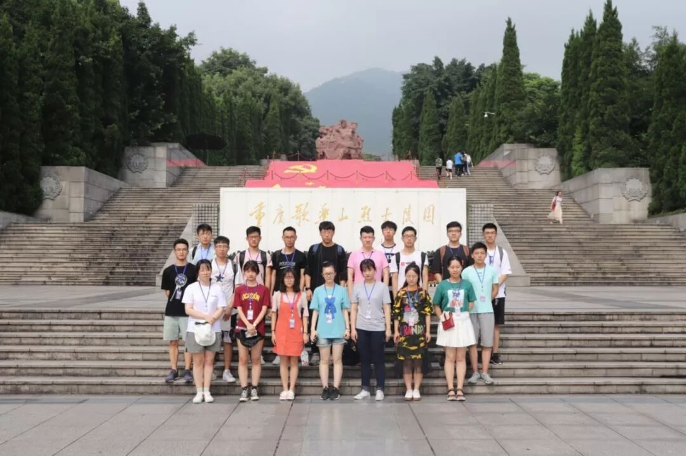
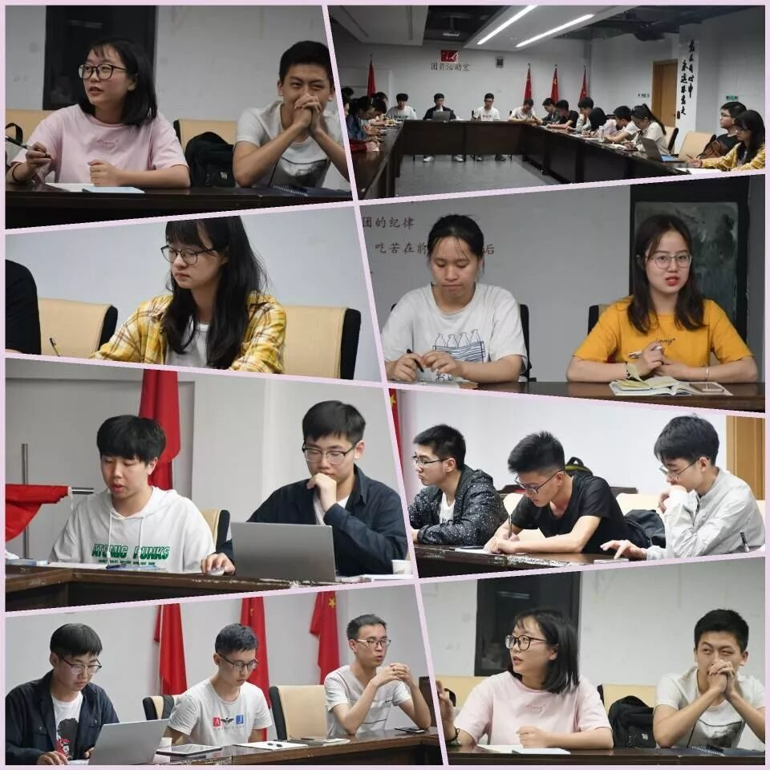
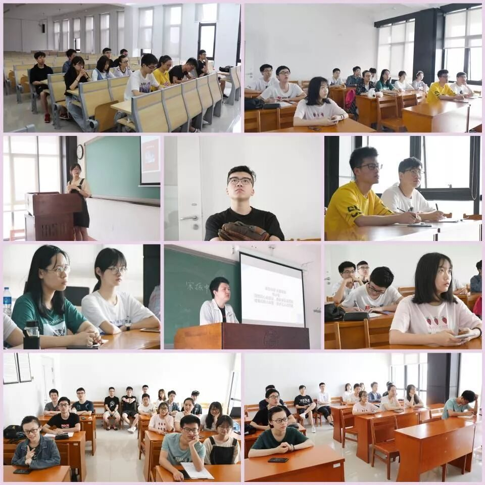
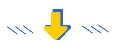
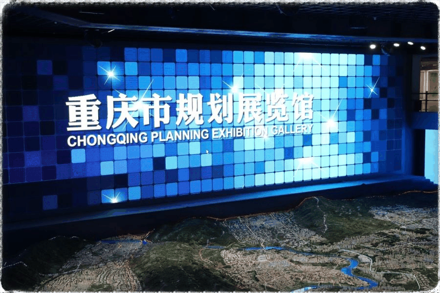
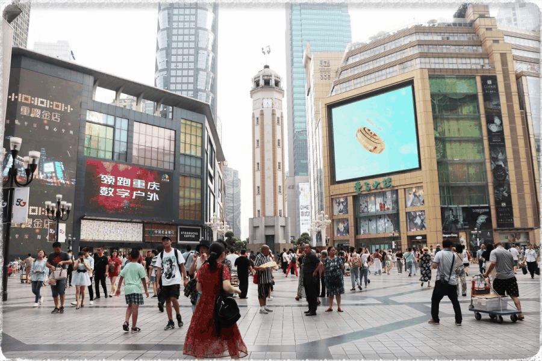
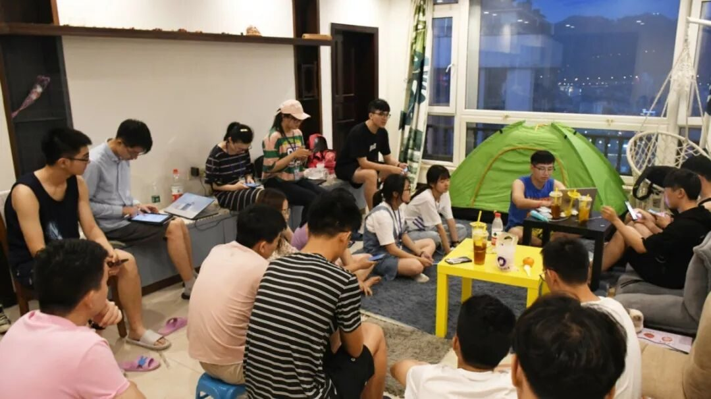
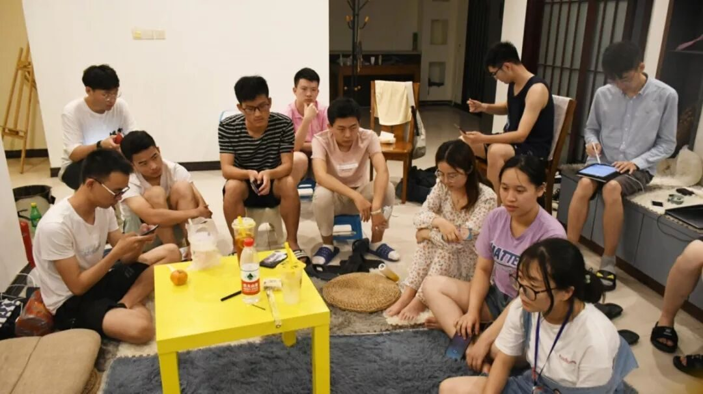
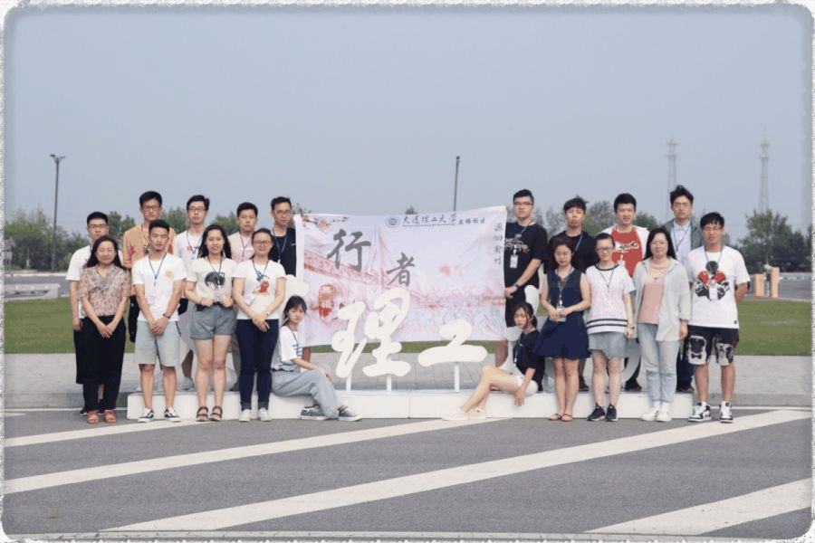

【渝传尺素•九】你带领着我穿透了渝州

行者 康艳虎
加入行者无疆的欣喜仿佛还停留在昨日，对于自己来说能成为团队中的一员是一件喜事，五月，我鼓起勇气，认真填写了行者无疆源洄渝州的报名表，只期待那百分之一的幸运能降临在我的头上，倘若能给我一次机会，我会付出我所有的努力去守护它，因为这本身就是自己的一次机缘，不可多得的那种。六月，我得到了整个大一学年最好的消息，我知道，我的行者之行就要开始了，这将会带走一切阴霾，充实光明。

行者课堂的开展无疑是一个正确的的决定，这在后期的文化调研中得到了很好的验证，它的意义不仅仅是使行者们了解巴渝和英雄文化，以便对行程有着很好的理解。更多的是把行者们聚集在一起，共同在闲暇的时光里寻找着属于行者无疆的小美好。


重庆的行程安排永远使我们对明天有着期待，重庆城市规划馆将重庆这座历史古城通过大大小小的沙盘展示给前来参观的游客，傍山而建，吸尽了天地的气息，使它的自然气息愈发的浓厚。

解放碑是中华民族唯一一座纪念中华民族抗日战争胜利的纪念碑，很难想象这么一座有象征意义的纪念碑竟然淹没在商业街之中，很多时候看上去，它更像是一种商标，只属于重庆的商标。傍晚时候，当地居民和游客聚集在解放碑附近，以此为中心开始重庆的夜生活。

渣滓洞白公馆是重庆著名的网红景点，网红文化带动了当地旅游业的发展，巨大的客流量令人吃惊，越来越多的人来到此地不是为了缅怀革命英雄，而是为了到此一游，网红打卡，这不禁引起人们的议论，网红文化是帮助英雄文化的传承，还是对文化的一种迫害，直到听了巴蜀中学的周老师的讲座后我恍然大悟，网红文化存在就有它的意义，相比于文化无人问津，这种方式似乎使文化传承向好的地方发展。
行者的团体会议是每天必不可少的一部分，在会议上，行者们畅所欲言，各抒己见，交流着自己一天行程中的心得，也正是在这个时候，我们更加深刻的认识彼此，行者们的一天是忙碌而充实的，宣传组要赶着做明早要发的推送，摄影组要筛选照片上传到群里，文字组写用于推送的文章，外联组和财务组要商讨第二天的行程路线和开支，调研组讨论调研报告的思路，采访组准备第二天采访的话题，一切的一切都是为了第二天的行程井然有序，到不管怎么样，队长总是等到所有任务都完成才肯休息，真的超辛苦。我意识到我正在和一群优秀的朋友共事，这对我自己是不菲的财富。


重庆一行在忙碌与快乐中就这么过去了，第一次领略到此地风光，不禁发出一声声感叹，是啊，在那段时间里，我见识到了太多的巴渝文化与英雄传奇，看到了很多在课本，甚至在网络上不能看到的东西，不身临其境，怎知它有多么神奇，有机会和团队里十八位优秀的朋友完美的终结巴渝魅力四射的篇章，会当凌绝顶，一览众山小，我只觉得此行稳赚不赔，自己收获的远比预想的要多很多。

行者的心永远不会散，因为我们是一行为行者，终生为行者代言。喜欢行者无疆的每一个人，为曾经一同度过难忘的巴渝之旅的所有人比心。
来源丨行者无疆实践团
文字丨康艳虎
排版丨邓子孚
审核丨邓子孚 段智然
视频丨陈辉
行者无疆实践团
QQ：2758025831
随行者一起认识世界
长按二维码